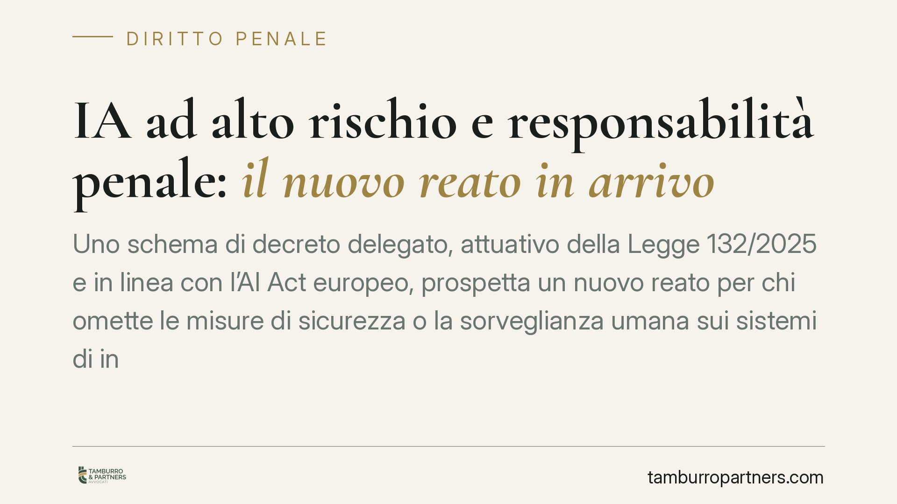

IA ad alto rischio e responsabilità penale: il nuovo reato in arrivo
Uno schema di decreto delegato, attuativo della Legge 132/2025 e in linea con l'AI Act europeo, prospetta un nuovo reato per chi omette le misure di sicurezza o la sorveglianza umana sui sistemi di intelligenza artificiale ad alto rischio. La cornice edittale discussa arriva alla reclusione fino a otto anni, elevabile con aggravanti. Un segnale netto per imprese e pubbliche amministrazioni.

Una premessa metodologica necessaria
Il quadro che descriviamo è in evoluzione. Le disposizioni richiamate derivano dalla delega contenuta nella Legge 132/2025 e da uno schema di decreto delegato ancora in fase di definizione. Non si tratta, allo stato, di norme vigenti e definitivamente numerate nel codice penale. La numerazione dell'articolo (prospettata come art. 437-bis c.p.), la cornice edittale e la data di entrata in vigore vanno quindi letti come dati anticipatori, da confermare sul testo ufficiale una volta promulgato. Trattare una bozza come diritto vigente sarebbe un errore: qui ne anticipiamo la logica per consentire una preparazione tempestiva.
Inquadramento: dove si colloca la nuova fattispecie
La collocazione prospettata è significativa. L'ipotesi di inserire la norma accanto all'art. 437 c.p. — che punisce l'omissione dolosa di cautele contro infortuni sul lavoro — rivela la chiave di lettura: il legislatore tratta i sistemi di IA ad alto rischio come fonti di pericolo da presidiare, al pari degli impianti industriali.
Il reato prospettato colpirebbe due condotte: l'omissione delle misure di sicurezza e della sorveglianza umana richieste per questi sistemi, e la loro manomissione. Il riferimento tecnico sovraordinato è il Regolamento UE 2024/1689 (AI Act), che per i sistemi ad alto rischio impone una supervisione umana effettiva. La formulazione esatta dell'obbligo è contenuta nell'articolo dell'AI Act dedicato alla *human oversight*: la numerazione va verificata sul testo consolidato, ma il principio è consolidato — un sistema ad alto rischio non può operare senza un presidio umano in grado di intervenire.
Sorveglianza "sulla carta" e sorveglianza effettiva
Il punto interpretativo più delicato riguarda il contenuto dell'obbligo. Designare formalmente un responsabile della supervisione non basta. Ciò che rileva è la sorveglianza *effettiva*: la possibilità concreta, tecnica e organizzativa, per un essere umano di comprendere il funzionamento del sistema, intercettarne gli esiti anomali e arrestarlo. Un presidio esistente solo nell'organigramma, privo di strumenti operativi e di competenze adeguate, difficilmente escluderà il rischio penale.
I profili penale e civile vanno tenuti distinti
Occorre separare due piani che il dibattito tende a confondere.
Sul piano penale, la responsabilità resta ancorata ai criteri ordinari di imputazione. Nessun automatismo: va accertata la condotta omissiva o manipolativa e l'elemento soggettivo richiesto dalla fattispecie.
Sul piano della responsabilità degli enti (modello del D.lgs. 231/2001), l'eventuale inserimento del nuovo reato tra quelli rilevanti non comporterebbe un'imputazione automatica dell'ente per il fatto del singolo. La responsabilità dell'ente presuppone che il reato sia commesso nel suo interesse o a suo vantaggio; e l'adozione ed efficace attuazione di un modello organizzativo idoneo a prevenire reati di quella specie costituisce esimente. L'ente, in altri termini, può andare esente da responsabilità dimostrando di aver predisposto presidi adeguati.
Sul piano civile e risarcitorio, si discute di regole probatorie più favorevoli al danneggiato nelle controversie sui danni da IA. Si tratta di una materia distinta da quella penale, con logiche proprie: eventuali alleggerimenti dell'onere della prova operano nel giudizio risarcitorio e non vanno sovrapposti all'accertamento del reato.
Implicazioni pratiche per imprese e PA
La platea potenzialmente interessata è ampia: fornitori, produttori, importatori e distributori di sistemi di IA, ma anche imprese e pubbliche amministrazioni che li utilizzano a fini professionali. Chi impiega sistemi ad alto rischio — nella selezione del personale, nella valutazione del credito, in ambito sanitario o nella gestione di servizi essenziali — dovrebbe considerarsi destinatario diretto degli obblighi di sorveglianza.
Cosa fare in concreto
- Mappare i sistemi di IA in uso o in fornitura e classificarli secondo le categorie dell'AI Act, individuando quelli ad alto rischio.
- Verificare la catena di responsabilità: stabilire chi, in concreto, esercita la sorveglianza umana e con quali strumenti di intervento.
- Rafforzare la supervisione effettiva: dotare i soggetti preposti di competenze, accessi e procedure per comprendere e arrestare il sistema.
- Aggiornare il modello 231, se applicabile, includendo i nuovi profili di rischio e tracciando i controlli.
- Documentare misure, test e log: in un eventuale contenzioso la tracciabilità delle cautele adottate è elemento decisivo.
Monitorare l'iter del decreto resta essenziale: la versione definitiva potrebbe modificare condotte, pene e tempi di applicazione.
Ogni condominio ha una storia a sé.
Se gestisci un'amministrazione e vuoi un confronto su una specifica questione condominiale, scrivi allo studio. Ti rispondiamo entro un giorno lavorativo.